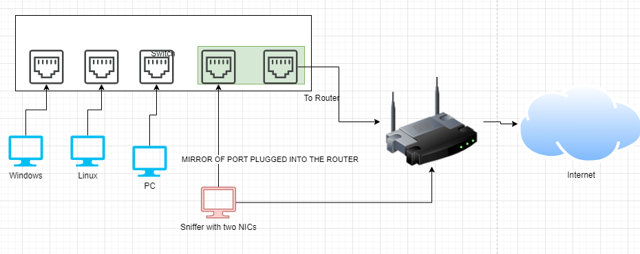

Network - Network Monitoring
Network Monitoring
• Network monitoring involves sniffing network traffic
• There are several ways to sniff traffic, however, traffic mirroring option in a switch is probably the easiest way of doing it
• Typically the setting in switch configuration is labeled port mirroring
• Sniffing machine will have two NICs, one for sniffing data and one for regular communication/internet
• The host doing the sniffing will require two network interfaces
• The interface doing the sniffing will need to be configured to promiscuous mode and it should not be getting an IP
• Mirrored traffic in the example diagram above only will contain traffic to/from the router, it is possible to mirror additional ports to capture traffic from Windows to Linux for example.
• In this example, the two interfaces are ens18 & ens19, they could be named differently on another system (like eth0 or eno1).
• ens19 will be sniffing traffic and will be connected to the mirror port
◇ This will only receive traffic and not send any out
• ens18 will be connected to the router
◇ This will send/receive traffic, just like any host connected to the router & internet
https://en.wikipedia.org/wiki/North-south_traffichttps://en.wikipedia.org/wiki/East-west_trafficHardware that supports mirroring:
https://docs.securityonion.net/en/2.3/hardware.html#packetsRB260GS & GS105E v2 are cheap and great.
It may be simpler/easier to just get SELKS, Security-Onion, or Corelight@Home and ship logs from those platforms.
https://www.stamus-networks.com/selkshttps://securityonionsolutions.com/software/https://corelight.blog/2020/11/19/corelight-at-home/https://www.humio.com/whats-new/blog/monitor-home-network-with-corelight-humio/